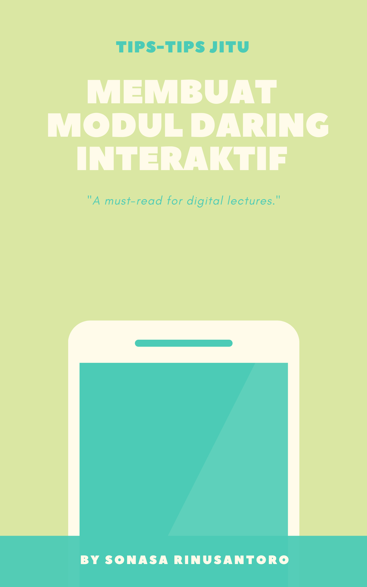
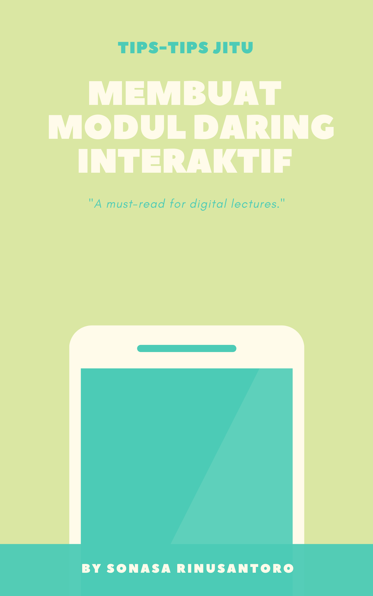

Home


Pendidikan
Pekerjaan
Penelitian/Pengabdian Masyarakat :
Buku
Alamat Kontak
| 08121579288
| sonasa@ecampus.ut.ac.id
| Kantor Pusat Universitas Terbuka - Gedung LPPMP Lt. 2
Jalan Cabe – Pondok Cabe – Kota Tangerang Selatan
https://rinusantoro.github.io/
Latar Belakang
Tantangan saat ini yang dihadapi oleh pendidikan semakin meningkat karena tuntutan terhadap kualitas sumber daya manusia yang semakin meningkat. Salah satu tantangan yang dihadapi secara langsung dalam proses pembelajaran adalah kemampuan mahasiswa yang tidak merata, bahkan dalam satu kelas yang sama terdapat peserta didik dengan kecepatan belajar yang berbeda, sehingga proses pembelajaran menjadi tidak optimal. Selain itu, keterbatasan sumber belajar di Universitas menjadi hambatan dalam proses pembelajaran. Keterbatasan sumber belajar berdampak pada kualitas peserta didik sebagai sumber daya manusia.
Oleh karena itu, dibutuhkan suatu bahan yang sistematis yang dapat membantu Dosen dalam proses pembelajaran, sehingga akan mempermudah peserta didik dalam memahami materi sampai dengan mengaplikasikannya di dunia kerja kelak. Bahan yang dapat membantu Dosen dalam proses pembelajaran tersebut dikenal dengan istilah bahan ajar atau modul.
Deskripsi Singkat
Materi yang akan disampaikan pada modul ini adalah membuat modul daring interaktif. Dijelaskan mengenai pengertian modul, jenis-jenis modul, tips jitu membuat modul daring, membuat modul daring interaktif mengguanakan aplikasi flip maker html dan exelearning.
Standar Kompetensi
Standar kompetensi yang yang ingin dicapai dalam pembuatan modul ini adalah peserta pelatihan dapat membuat modul daring interaktif menggunakan perangkat lunak flip maker html dan exeleraning.
Modul adalah kegiatan program belajar-mengajar yang dapat dipelajari oleh murid dengan bantuan yang minimal dari guru pembimbing, meliputi perencanaan tujuan yang akan dicapai secara jelas, penyediaan materi pelajaran, alat yang dibutuhkan, serta alat untuk penilai, mengukur keberhasilan murid dalam penyelesaian pelajaran; (KBBI Daring, 2019)
Modul pembelajaran merupakan sumber belajar selain guru yang dirancang sistematis oleh ahli bidang studi tertentu atau profesi guru menurut kaidah-kaidah perancangan dengan tujuan meningkatkan efektivitas, efisiensi, dan meningkatkan ketertarikan siswa untuk terus belajar (Dwiyogo, 2013:132)
Sumber belajar online memungkinkan proses pembelajaran dapat memperoleh capaian berupa “complex skills” yang dibutuhkan di era global sekaligus memungkinkan adanya student centered learning (Mills, 2006:3)
Modul sebuah buku yang ditulis dengan tujuan agar peserta didik dapat belajar secara mandiri tanpa atau dengan bimbingan guru. (Depdiknas, 2008)
Karakteristik Modul :
Jenis-jenis Modul Daring :
1. TENTUKAN JENIS MULTIMEDIA PEMBELAJARAN
Perhatikan dengan benar, yang akan kita buat itu apakah alat bantu kita untuk mengajar (presentasi) ke mahasiswa atau kita arahkan untuk bisa dibawa pulang siswa alias untuk belajar mandiri di rumah atau universitas. Jenis multimedia pembelajaran menurut kegunannya ada dua:
2. TENTUKAN TEMA MATERI AJAR
Ambil tema bahan ajar yang menurut kita sangat membantu meningkatkan pemahaman ke mahasiswa dan menarik bila kita gunakan multimedia. Ingat bahwa tujuan utama kita membuat multimedia pembelajaran adalah untuk meningkatkan pemahaman mahasiwa. Jangan terjebak ke memindahkan buku ke media digital, karena ini malah mempersulit mahasiswa. Ketika dosen biologi ingin menggambarkan sebuah jenis tumbuhan supaya bisa dipahami siswa, dan itu sulit ternyata dilakukan (karena dosen tidak bisa nggambar di komputer, dsb), maka ya jangan dilakukan Alangkah lebih baik apabila pohon tersebut dibawa saja langsung ke depan kelas. Ini salah satu contoh bagaimana media pembelajaran itu sebenarnya tidak harus dengan teknologi informasi.
3. SUSUN ALUR CERITA (STORYBOARD)
 Susun alur cerita atau storyboard yang memberi gambaran seperti apa materi ajar akan disampaikan. Jangan beranggapan bahwa storyboard itu hal yang susah, bahkan point-point saja asalkan bisa memberi desain besar bagaimana materi diajarkan sudah lebih dari cukup. Cara membuatnya juga cukup dengan software pengolah kata maupun spreadsheet yang kita kuasai, tidak perlu muluk-muluk menggunakan aplikasi pembuat storyboard professional. Untuk storyboard sederhana, saya berikan contoh karya pak ismudji dari Bontang, Kaltim (ismudji-storyboard.pdf). Sedangkan yang agak kompleks, bisa dilihat dari yang dibuat teman-teman di Brainmatics dan IlmuKomputer.Com untuk konten Rekayasa Perangkat Lunak (rpl-storyboard.pdf)
Susun alur cerita atau storyboard yang memberi gambaran seperti apa materi ajar akan disampaikan. Jangan beranggapan bahwa storyboard itu hal yang susah, bahkan point-point saja asalkan bisa memberi desain besar bagaimana materi diajarkan sudah lebih dari cukup. Cara membuatnya juga cukup dengan software pengolah kata maupun spreadsheet yang kita kuasai, tidak perlu muluk-muluk menggunakan aplikasi pembuat storyboard professional. Untuk storyboard sederhana, saya berikan contoh karya pak ismudji dari Bontang, Kaltim (ismudji-storyboard.pdf). Sedangkan yang agak kompleks, bisa dilihat dari yang dibuat teman-teman di Brainmatics dan IlmuKomputer.Com untuk konten Rekayasa Perangkat Lunak (rpl-storyboard.pdf)
4. GUNAKAN TEKNIK ATM
Terapkan metode ATM (Amati, Tiru dan Modifikasi). Usahakan sering melihat contoh-contoh yang sudah ada untuk membangkitkan ide. Gunakan logo, icon dan image yang tersedia secara default. Apabila masih kurang puas:
5. TETAPKAN TARGET
Jaga keseriusan proses belajar dengan membuat target pribadi, misalnya untuk mengikuti lomba, memenangkan award, menyiapkan produk untuk dijual, atau deadline jadwal mengajar di kelas. Target perlu supaya proses belajar membuat multimedia pembelajaran terjaga dan bisa berjalan secara kontinyu alias tidak putus di tengah jalan. Untuk lomba dan award, paling tidak di Indonesia ada berbagai event nasional yang bisa kita jadikan target. Balai pengembangan multimedia dan dinas pendidikan nasional di berbagai daerah saat ini saya lihat mulai marak menyelenggarakan berbagai event lomba di tingkat lokal.
6. INGAT TERUS TIGA RESEP DARI SUCCESS STORY
Kesuksesan bapak ibu dosen dalam mengembangkan multimedia pembelajaran bukan dari kelengkapan infrastruktur atau berlimpahnya budget yang dimiliki, tapi justru dari ketiga hal ini:
 Saya berikan contoh bagaimana pak Joko Triyono, guru kesenian dari SMA prembun berdjoeang sampai akhirnya menikmati banyak penghargaan di berbagai event. Saya ingat benar karya pertama beliau tahun 2005 berformat HTML, masih polos sekali, bahkan beberapa halaman error karena salah link. Kemudian beliau belajar dari awal menggunakan software presentasi dan akhirnya tahun 2007 beliau berhasil menghasilkan produk yang sudah siap jual dalam tema Musik Gamelan. Beliau rekam satu persatu puluhan peralatan gamelan jawa, dan dimasukkan ke multimedia pembelajaran yang beliau buat. Dahsyatnya kita bisa nanggap wayang tanpa gamelan dan gending asli, cukup dengan software itu saja, asal dimainkan banyak orang dengan masing-masing memilih satu jenis gamelan.
Saya berikan contoh bagaimana pak Joko Triyono, guru kesenian dari SMA prembun berdjoeang sampai akhirnya menikmati banyak penghargaan di berbagai event. Saya ingat benar karya pertama beliau tahun 2005 berformat HTML, masih polos sekali, bahkan beberapa halaman error karena salah link. Kemudian beliau belajar dari awal menggunakan software presentasi dan akhirnya tahun 2007 beliau berhasil menghasilkan produk yang sudah siap jual dalam tema Musik Gamelan. Beliau rekam satu persatu puluhan peralatan gamelan jawa, dan dimasukkan ke multimedia pembelajaran yang beliau buat. Dahsyatnya kita bisa nanggap wayang tanpa gamelan dan gending asli, cukup dengan software itu saja, asal dimainkan banyak orang dengan masing-masing memilih satu jenis gamelan.
Konversi Modul Digital ke LMS
Berikut yang merupakan jenis-jenis modul daring adalah?
Benar
Benar
Salah
Perizinan di bawah Creative Commons Attribution Share Alike License 4.0